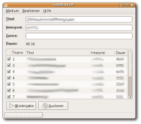
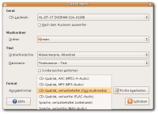

Sound Juicer
Dieser Artikel wurde für die folgenden Ubuntu-Versionen getestet:
Ubuntu 16.04 Xenial Xerus
Ubuntu 14.04 Trusty Tahr
Zum Verständnis dieses Artikels sind folgende Seiten hilfreich:
Sound Juicer  ist ein einfach zu bedienender CD-Player für GNOME. Neben dieser Funktion bietet es die Möglichkeit, Titel in verschiedene Formate wie FLAC, Vorbis, WAV oder MP3) umzuwandeln. Besteht eine Internetverbindung, werden Titelinformationen automatisch von MusicBrainz geladen.
ist ein einfach zu bedienender CD-Player für GNOME. Neben dieser Funktion bietet es die Möglichkeit, Titel in verschiedene Formate wie FLAC, Vorbis, WAV oder MP3) umzuwandeln. Besteht eine Internetverbindung, werden Titelinformationen automatisch von MusicBrainz geladen.
Installation¶
Das Programm kann über folgendes Paket installiert werden [1]:
sound-juicer (universe)
 mit apturl
mit apturl
Paketliste zum Kopieren:
sudo apt-get install sound-juicer
sudo aptitude install sound-juicer
Bedienung¶
 Nach erfolgreicher Installation findet man das Programm bei Ubuntu-Varianten mit einem Anwendungsmenü unter "Unterhaltungsmedien -> Audio-CDs auslesen".
Nach dem Einlegen einer CD – und bei bestehender Internetverbindung – zeigt das Programm unter anderem die Informationen zu Titel, Interpret und Dauer an. Nach gestarteter Wiedergabe erscheint im unteren Fensterbereich ein Schieberegler, der es erlaubt, dass man im Titel hin und her springen kann. Ein Klick auf den Lautsprecher öffnet einen Dialog, in dem die Lautstärke angepasst werden kann.
Falls die CD nicht wiedergegeben, sondern ausgelesen ("gerippt") werden soll, können noch einige weitere Einstellungen vorgenommen werden. Insbesondere zum Erstellen von MP3-Dateien sind noch Vorarbeiten notwendig.

Konfiguration¶
In der Einstellungsmaske gibt es mehrere Parameter:
Gerät - Bei mehreren Laufwerken kann hier eingetragen werden, auf welches Sound Juicer zugreifen soll. Soll die CD anschließend ausgeworfen werden, muss man ein Häkchen setzen.
Musikordner - Pfadangabe, wohin das Programm die Dateien kopieren soll
Titel - Einstellungsoptionen, nach welchen Kriterien die Ordner und Dateien benannt werden sollen
Format - Ausgabeformat der Dateien angeben
Um andere als die standardmäßig vorgesehenen Optionen für die Ordnerhierarchie oder die Dateinamen für die Titel anzugeben, können mit dem Konfigurationseditor in apps/sound-juicer die Einträge für die Schlüssel "path_pattern" und "file_pattern" geändert und erweitert werden.
Um z.B. den Titel in der Form Künstler-Album-Titelnummer-Titel abzuspeichern, bei "file_path"
%ta - %at - %tN - %tt
eintragen. In den Erläuterungen zum Schlüssel sind auch weitere Variablen erklärt.
MP3¶
Um MP3 als Ausgabeformat hinzuzufügen, müssen folgende Pakete installiert [1] werden:
lame (multiverse)
gstreamer0.10-plugins-ugly (universe)
mit apturl
Paketliste zum Kopieren:
sudo apt-get install lame gstreamer0.10-plugins-ugly
sudo aptitude install lame gstreamer0.10-plugins-ugly
Ein Profil für die MP3-Ausgabe ist bereits vorhanden, es wird jedoch erst aktiviert, nachdem die oben genannten Pakete installiert wurden. Die Standard-Bitrate beträgt hierbei 128 kbps. Will man diese ändern, so muss ein neues Profil angelegt werden (siehe nächster Abschnitt).
Hinweis:
Speziell bei MP3 sollte der Fehlerbericht 195483 berücksichtigt werden. Vorbis als Ausgabeformat ist davon nicht betroffen.
Konfiguration von GStreamer¶
Hinweis:
Die Konfiguration der GStreamer-Pipeline wie im folgenden beschrieben ist unter der aktuellen Version von Sound Juicer nicht mehr ohne weiteres möglich. Um die Pipelines bearbeiten zu können, ist die Installation des Paket gnome-media-profiles notwendig; mit dem Aufruf von gnome-audio-profiles-properties im Terminal erreicht man die beschriebenen Einstellungsmöglichkeiten. Die Einstellungen können auch von anderen Anwendungen genutzt werden, z.B. Rhythmbox.
Um die Pipeline zu konfigurieren, öffnet man Sound Juicer und wählt "Bearbeiten -> Einstellungen -> Profile bearbeiten". Nun klickt man rechts auf "Neu". Der "Profilname" kann beliebig gewählt werden. Anschließend wählt man das neu erstellte Profil aus der Liste aus und klickt auf "Bearbeiten". Bei der "Dateiendung" ersetzt man wav durch mp3 und das Kästchen "aktiv" muss angehakt werden. Jetzt fehlt nur noch die GStreamer-Weiterleitung. Zwei Beispiele:
MP3s mit einer festen Bitrate (CBR) von 192 kbps erstellen:
audio/x-raw-int,rate=44100,channels=2 ! lame name=enc mode=1 quality=2 vbr=0 bitrate=192 ! xingmux ! id3v2mux
MP3s mit variabler Bitrate (VBR) ~190kbps erstellen:
audio/x-raw-int,rate=44100,channels=2 ! lame name=enc mode=1 quality=2 vbr=4 vbr-quality=2 ! xingmux ! id3v2mux
Anschließend muss man Soundjuicer neu starten, dann kann das angelegte Profil ausgewählt und benutzt werden.
Titelinformationen¶
Sollte die eingelegte CD unbekannt sein, können die einzelnen Felder angeklickt und editiert werden. Möchte man diese Informationen anderen Anwendern zur Verfügung stellen, bietet das Programm unter: "Medium -> Titelnamen übermitteln..." die Möglichkeit, diese Informationen ins Internet zu versenden.
Tastenkürzel¶
| Tastenkürzel | |
| Taste(n) | Funktion |
| Strg + P | Wiedergabe |
| Strg + N | nächster Titel |
| Strg + B | vorheriger Titel |
| Strg + J | CD auswerfen |
| Strg + ⏎ | CD auslesen |
| Strg + R | Titelinformationen vom Server holen |
| Strg + D | Einstellungen vornehmen |
| Strg + Q | Programm beenden |
Problembehebung¶
ID3v2-Tags¶
Falls die (wenn möglich) automatisch gesetzten Informationen zu Interpret, Titel usw. auf externen Hardware-Playern nicht erkannt werden, müssen diese Metadaten von ID3v2.4 nach ID3v2.3 konvertiert werden. Dafür eignen sich z.B. EasyTAG oder eyeD3.
Gstreamer¶
Sollte das Programm beim Rippen die Fehlermeldung:
"Internal GStreamer error: negotiation problem"
ausgeben, muss man lediglich die verwendete Bitrate ändern.
Programm stürzt beim Auslesen ab¶
Wenn die Titel auf der CD keine Namen haben, kann es sein, dass das Programm beim Auslesen abstürzt. Um das zu vermeiden, müssen den Titeln Namen gegeben werden.

 Übersichtsartikel
Übersichtsartikel- Erstellt mit Inyoka
-
 2004 – 2017 ubuntuusers.de • Einige Rechte vorbehalten
2004 – 2017 ubuntuusers.de • Einige Rechte vorbehalten
Lizenz • Kontakt • Datenschutz • Impressum • Serverstatus -
Serverhousing gespendet von